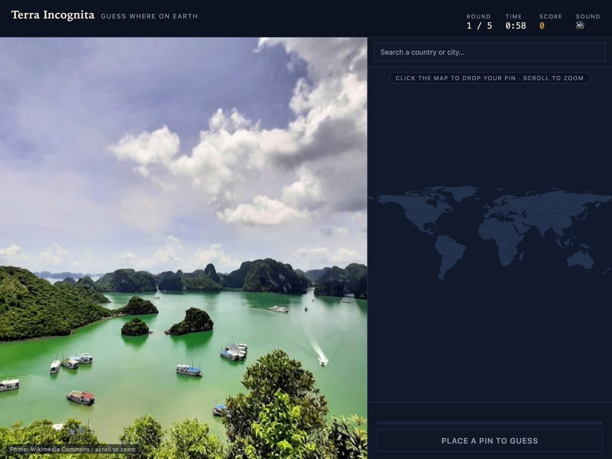

Terra Incognita
A where-in-the-world guessing game: you get a photo of a real place — or a drop into Street View — and you put a pin on the world map. Play solo, take the Weekly Expedition, or host a live room where people can join from any device with a four-letter code and guess against one clock.
FreeLive roomsStreet ViewWeekly expedition
Play the game →
Read the build note →
GitHub →